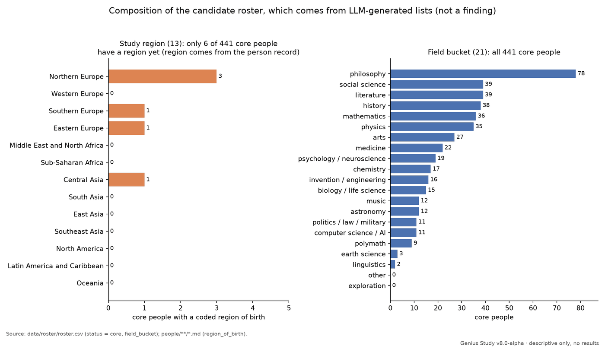

Genius Study
studyv8 in progress
One home for every version of the Neuresthetics study. It's a two-lane study of lawful order and remembered genius.
Two lanes
Lane A describes what the public record shows. Lane B states a belief out loud and writes it so it can fail. Lane A doesn't depend on Lane B.
Status
Version 8 starts by rebuilding the data from the original model lists. v8.0-alpha is tagged as a GitHub prerelease. It's scaffolding and draft records only: the rebuilt roster, the schemas and validators, and a few unreviewed draft records.
- core people coded6 / 441
- belief systems sourced9 / 77
- method decisions settled21 / 21
- results
- none yet
- latest tag
- v8.0-alpha (prerelease)
- latest complete
- v7.1
# from the repo README, as of 2 Oct 2026
There are no results yet. Nothing in v8.0-alpha supports a frequency, rate, or ranking claim, so don't draw one from it.
The latest complete release is v7.1. Earlier versions stay in their own repos and are linked as history.
Descriptive figures
These charts describe what's in the repo so far. They are not results. The roster comes from five LLM-generated lists.

